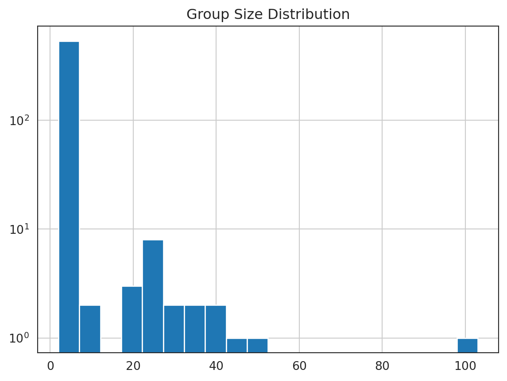
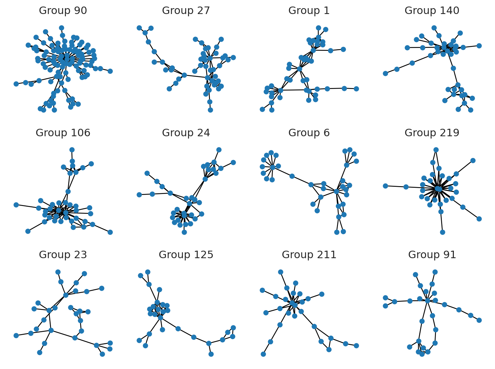
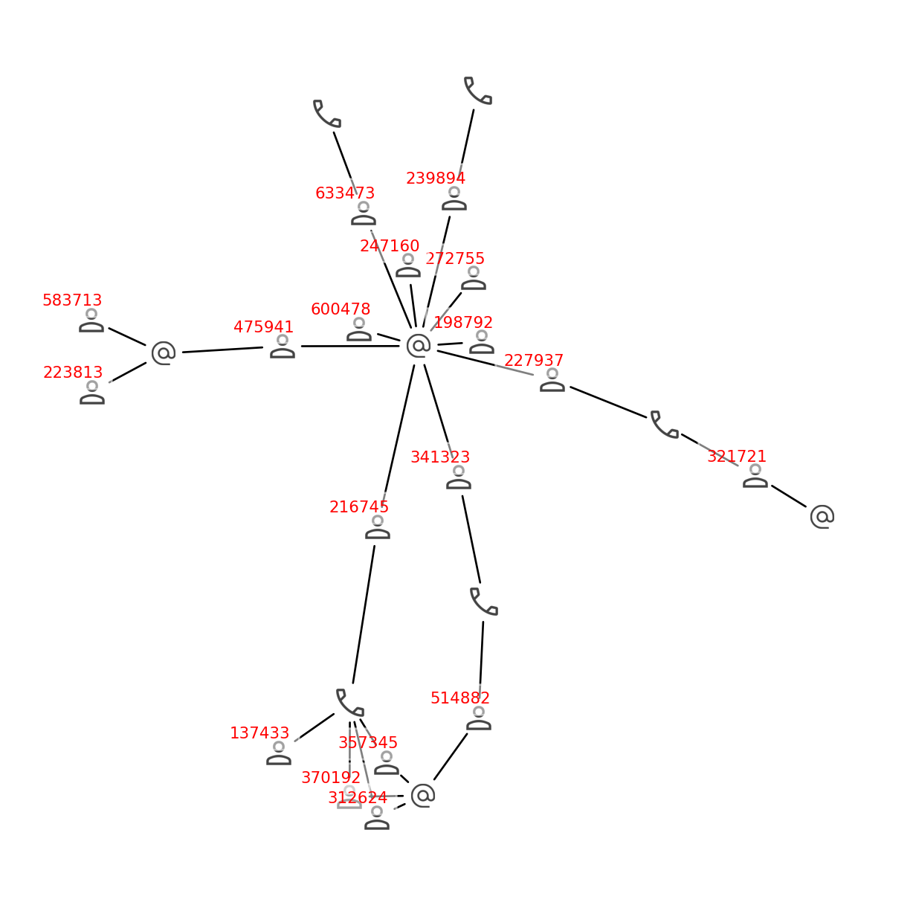

customers = pd.read_csv("data/customers.csv")
emails = pd.read_csv("data/emails.csv")
phones = pd.read_csv("data/phones.csv")Introduction
Traditional relational databases and spreadsheets fall short in capturing complex relationships among customers. Enter graph theory – a powerful framework for representing and analyzing interconnected data. By visualizing customer relationships as a graph, we can uncover hidden patterns, identify clusters, and improve data quality.
Motivation
Over time, customers records can become fragmented and duplicated. For example, a customer may use multiple email addresses or phone numbers when interacting with a company. Creating a new record for each email or phone can lead to duplicate records for the same customer. This is especially common in B2B scenarios, where customers often have multiple representatives. Furthermore, some customers represent multiple companies, and their records may be duplicated across different companies.
Doing any type of marketing analysis on such dataset can lead to incorrect results. We cannot be sure about the latest purchase, the total amount spent, or the number of orders. Is this customer a loyal one or not? Is that customer a new one or not? Is this customer going to leave us or they just started buying from another company? Do we need to send a discount to this customer or not? To answer these questions, we need to have customers database defragmented and deduplicated.
Merging records manually can be time-consuming and error-prone. By using graphs, we can represent the relationships between customers, emails, and phones and find groups of connected customers. This can help us identify duplicate records and perform actions depending on our business logic.
Sample Data
We have three datasets: customers, emails, and phones. Each customer can have multiple emails and phones. The names, emails, and phones are generated randomly and do not correspond to real people, though the structure of the data is similar to what you might find in a real-world scenario. In fact, it is the sample taken from the real data, but the names and other personal information are generated randomly to replace the actual ones.
Take a look at the data.
customers.head(3)| customer_id | name | |
|---|---|---|
| 0 | 330087 | William Sparks |
| 1 | 443237 | Joseph Williams |
| 2 | 329867 | Eddie Porter |
Length: 1000 Unique: 1000emails.head(3)| customer_id | ||
|---|---|---|
| 0 | 599100 | brian12@example.net |
| 1 | 330087 | emyers@example.com |
| 2 | 25494 | cindymurphy@example.net |
Length: 957 Unique: 626 Duplicated: 331 Empty: 0phones.head(3)| customer_id | phone | |
|---|---|---|
| 0 | 15962 | 876.997.0254 |
| 1 | 99723 | 001-706-213-0362 |
| 2 | 99723 | 886.527.4420x90003 |
Length: 855 Unique: 524 Duplicated: 331 Empty: 0Icons for Nodes
Next chunk of code creates a dictionary of icons for different types of nodes in the graph. It will be used later to visualize the subgraphs.
import PIL
icons = {
"customer": "icons/customer.png",
"phone": "icons/phone.png",
"email": "icons/email.png",
}
images = {k: PIL.Image.open(fname) for k, fname in icons.items()}Creating a Graph
Let’s create graph and add nodes. Each node will represent a customer, email, or phone. We will use the images dictionary to assign an image to each node, but it’s not necessary for the procedure, as well as setting the type of the node.
G = nx.Graph()
nodes = []
for x in emails["email"].dropna().unique():
G.add_node(x, image=images["email"], type="email")
for x in phones["phone"].dropna().unique():
G.add_node(x, image=images["phone"], type="phone")
for x in customers["customer_id"].unique():
G.add_node(x, image=images["customer"], type="customer")Next, we will add edges to the graph. The edges will connect customers with their emails and phones.
edges = []
for x in customers[["customer_id"]].merge(emails).values:
edges.append(x)
for x in customers[["customer_id"]].merge(phones).values:
edges.append(x)
G.add_edges_from(edges)Finding Groups of Connected Customers
Customers that share the same email or phone will be connected by the edges. Let’s find groups of connected customers.
groups = list(nx.connected_components(G))
print("Groups:", len(groups))Groups: 559Visualizing the Graph
The number of connected components is rather large to visualize all of them, and most of the groups will contain only a few nodes. Let’s find the groups with the largest number of nodes and visualize them.
df = pd.DataFrame([groups]).T
df.columns = ["group"]
df["size"] = df["group"].apply(len)
df["size"].hist(bins=20, log=True)
plt.title("Group Size Distribution")
plt.show();
plt.close()
The simplest way to visualize the graph is to use the draw function from the networkx library. We will use the nx.draw function to visualize the graph. We will create a grid of subplots and visualize the top groups. Parameter seed is set to 42 to make the layout reproducible.
fig, axes = plt.subplots(3, 4, figsize=(8, 6))
top_groups = list(
df.sort_values(
"size",
ascending=False,
)
.head(len(axes.flatten()))
.index
)
for i, g in enumerate(top_groups):
ax = axes.flatten()[i]
subgraph = G.subgraph(groups[g])
pos = nx.spring_layout(subgraph, seed=42)
nx.draw(
subgraph,
pos=pos,
with_labels=False,
node_size=25,
ax=ax,
)
ax.set_title(f"Group {g}");
plt.tight_layout()
plt.show();
plt.close()
There are literally constellations of different shapes and sizes. Let’s visualize some of them in more detail.
Visualizing Subgraphs
Let’s visualize one of the largest group in more detail. We will use the nx.draw_networkx_edges function to draw the edges and the imshow function to display the icons of the nodes. We will also add the customer id to the customers’ nodes. The value of parameter seed is set to the same value as in the previous chunk to keep the layout. You can change it to see different layouts.
subgraph = G.subgraph(groups[91])
fig, ax = plt.subplots(figsize=(8, 8))
pos = nx.spring_layout(subgraph, seed=42)
nx.draw_networkx_edges(
subgraph,
pos=pos,
ax=ax,
arrows=True,
arrowstyle="-",
min_source_margin=10,
min_target_margin=10,
)
tr_figure = ax.transData.transform
tr_axes = fig.transFigure.inverted().transform
icon_size = (ax.get_xlim()[1] - ax.get_xlim()[0]) * 0.015
icon_center = icon_size / 2.0
for n in subgraph.nodes:
xf, yf = tr_figure(pos[n])
xa, ya = tr_axes((xf, yf))
a = plt.axes([xa - icon_center, ya - icon_center, icon_size, icon_size])
a.imshow(subgraph.nodes[n]["image"])
if G.nodes[n]["type"] == "customer":
a.text(
0.5,
0.5,
n,
ha="center",
va="center",
fontsize=8,
color="red",
backgroundcolor="white",
bbox=dict(color="white", facecolor="white", alpha=0.5),
)
a.axis("off")
sns.despine(left=True, bottom=True)
plt.show();
plt.close()
Why Graphs and Not SQL?
We can see here that the customers in this group form pretty complex relationships. A customer may be connected to another one by the phone numbers, and the other one may be connected to the third one by the email, forming a chain of connections. I believe that it is nearly impossible to find this kind of relationship using SQL. The more complex the relationships are, the more time and effort it will take to find them using SQL. For example, if we have a chain of 10 customers, where each customer is connected to the next one by the phone number, it will take 10 joins to find this chain using SQL. If we have 100 customers in the chain, it will take 100 joins to find it using SQL, and the query will probably never complete. But it takes fractions of a second to find it using the graph.
Assigning Groups to Customers
Finally, we will assign a group to each customer. For that, we will expand the groups list and create a new DataFrame with the group_id and customer_id columns.
df = pd.DataFrame([groups]).T
df.columns = ["customer_id"]
df = df.explode("customer_id")
df["group_id"] = df.index
df.tail(3)| customer_id | group_id | |
|---|---|---|
| 557 | 601053 | 557 |
| 558 | 571.212.7377x69843 | 558 |
| 558 | 590385 | 558 |
Note that customer_id column contains phone numbers and emails as well as customer ids, but when we merge the data, there will remain only the customer ids.
customers = customers.merge(df)
customers.head(3)| customer_id | name | group_id | |
|---|---|---|---|
| 0 | 330087 | William Sparks | 1 |
| 1 | 443237 | Joseph Williams | 4 |
| 2 | 329867 | Eddie Porter | 6 |
Let’s check the number of customers and unique customer ids to make sure that we didn’t lose any customers neither we added duplicates.
len(customers), len(customers["customer_id"].unique())(1000, 1000)Looks good. Now we can save the data to the file.
customers.to_csv("data/customers_grouped.csv", index=False)Conclusion
In this article, we explored how to merge customer records using graphs. We created a graph of customers, emails, and phones and found groups of connected customers. We assigned a group to each customer and saved the data to a file. This approach can help us identify duplicate records and perform actions depending on our business logic. We also visualized the graph and subgraphs to better understand the relationships between customers. This can be useful for marketing analysis, customer segmentation, and other tasks that require a deep understanding of customer relationships.